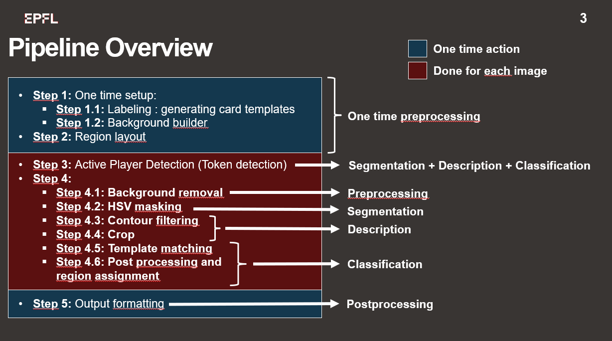
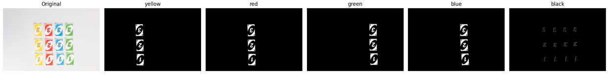

Designed and implemented a fully classical computer vision pipeline to detect and classify UNO cards in real-time game images — identifying each card's color and value and mapping it to the correct player region, with no neural networks involved.
UNO Card Recognition
Objective
Key Contributions
- Background Removal: Built a temporal median estimator across training images to model static backgrounds. The resulting closure strips non-white tablecloths from each frame before detection, with results cached to disk for efficiency on subsequent runs.
- Template Library Construction: Extracted per-color HSV masks from reference images, merged nearby rotated bounding boxes, and affine-warped the upper-left corner of each card to a fixed 85×85 px patch. Templates are filtered to retain only the white label pixels and dominant card color, and saved separately for colored and black (wild/draw-4) cards.
- Card Detection Pipeline: Applied per-channel morphological closing after HSV masking, then filtered contours by convex polygon approximation and rotated-bounding-box size thresholds. Each accepted candidate is cropped and classified by normalized cross-correlation (
TM_CCOEFF_NORMED) over 20 rotation angles, with a post-processing rule to resolve the draw-2 / 2 ambiguity. - Region Assignment: Used
pointPolygonTestdepth to assign each detected card to the player region where its center sits deepest, cleanly handling the overlapping polygon boundaries between adjacent player areas. - Active Player Detection: Detected the turn token via two dedicated detectors — a small dark rectangular blob on white backgrounds and a small yellow circular blob on dark backgrounds — selected automatically by inspecting the four corner patches of each image.
Visuals
 Fig 2. Five player/center regions overlaid on a game image
Fig 2. Five player/center regions overlaid on a game image
 Fig 4. Detected cards annotated by color and assigned to player regions
Fig 4. Detected cards annotated by color and assigned to player regions

Fig 1. Full detection pipeline — from raw frame to Kaggle submission CSV
Fig 2. Five player/center regions overlaid on a game image

Fig 3. HSV color masks after morphological closing (yellow, red, green, blue, black)
Fig 4. Detected cards annotated by color and assigned to player regions